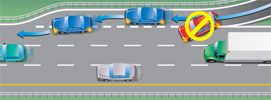
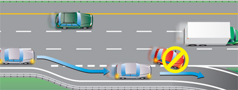

फ्रीवे ड्राइविंग
फ्रीवे (जिसे एक्सप्रेसवे भी कहा जाता है) एक तेज़ गति वाली, बहु-लेन वाली सड़क होती है। फ्रीवे पर, प्रत्येक दिशा में जाने वाले यातायात को अलग किया जाता है और रैंप वाहनों को प्रवेश करने और बाहर निकलने की सुविधा देते हैं। फ्रीवे पर वाहनों की गति अन्य सड़कों की तुलना में अधिक होती है, इसलिए ड्राइविंग अधिक चुनौतीपूर्ण और कठिन हो सकती है। हालांकि, चूंकि यहां कोई चौराहे, साइकिल या पैदल यात्री नहीं होते हैं, इसलिए अनुभवी चालकों के लिए फ्रीवे पर ड्राइविंग अधिक सुरक्षित हो सकती है।
हाई ऑक्यूपेंसी व्हीकल ( एचओवी ) लेन कहलाने वाली लेन का उपयोग निम्नलिखित के लिए किया जाना है:
- कम से कम दो लोगों को ले जाने वाले वाहन
- बसों
- लाइसेंस प्राप्त टैक्सियाँ
- हरे नंबर प्लेट वाले वाहन
- एयरपोर्ट लिमोज़ीन
- मोटरसाइकिल
- उच्च अधिभोग टोल ( HOT ) परमिट धारक (जहां अनुमति हो)
- आपातकालीन वाहन
आपको इन लेन के चिह्नों और संकेतों को पहचानना सीखना होगा, साथ ही इनके उपयोग के नियमों को भी समझना होगा।
नए ड्राइवरों को हाईवे पर गाड़ी चलाने से पहले कम गति पर अन्य वाहनों के बीच गाड़ी चलाना सीखना चाहिए। क्लास G1 के ड्राइवर केवल लाइसेंस प्राप्त ड्राइविंग प्रशिक्षक के मार्गदर्शन में ही हाईवे पर गाड़ी चला सकते हैं।
एक राजमार्ग में प्रवेश करना
हाईवे के प्रवेश द्वार पर आमतौर पर दो भाग होते हैं: एक प्रवेश रैंप और एक त्वरण लेन।
जैसे ही आप फ्रीवे के प्रवेश रैंप पर आगे बढ़ते हैं, आगे देखें और अपने दर्पणों और ब्लाइंड स्पॉट की जांच करके यातायात का आकलन करें ताकि यह पता चल सके कि आपको निकटतम फ्रीवे लेन में कहाँ जाना है।
रैंप से निकलते ही आप एक्सेलरेशन लेन में प्रवेश करते हैं। एक्सेलरेशन लेन में, चालक फ्रीवे पर चल रहे यातायात की गति के बराबर अपनी गति बढ़ाते हैं, फिर उसमें शामिल होते हैं। यातायात में सुचारू रूप से शामिल होने के लिए सिग्नल दें और अपनी गति बढ़ाएं। फ्रीवे चालकों को, यदि ऐसा करना सुरक्षित हो, तो दूसरी लेन में जाने वाले वाहनों के लिए जगह छोड़नी चाहिए।
हाईवे पर बाईं ओर से कुछ प्रवेश रैंप हैं। इसका मतलब है कि आप सबसे पहले सबसे तेज़ लेन में प्रवेश करेंगे। अपनी गति को ट्रैफिक की गति के बराबर करने के लिए एक्सीलरेशन लेन का उपयोग करें, जिससे आपकी गति तेज़ी से बढ़ेगी।

आरेख 2-54
फ्रीवे पर गाड़ी चलाना
हाईवे पर पहुँचने के बाद, एक सुरक्षित चालक स्थिर गति से गाड़ी चलाता है, आगे देखता है और आगे आने वाली सड़क पर क्या होने वाला है, इसका अनुमान लगाता है। यातायात को दाईं ओर रहना चाहिए और बाईं लेन का उपयोग ओवरटेक करने के लिए करना चाहिए।
शहर में गाड़ी चलाते समय, आपकी नज़रें लगातार आगे, अगल-बगल और पीछे की ओर घूमती रहनी चाहिए। तेज़ गति से गाड़ी चलाते समय, अगले 15 से 20 सेकंड में आप जहां पहुंचने वाले हैं, वहां तक या जितनी दूर तक आप देख सकते हैं, वहां तक नज़र रखें। याद रखें कि लगातार देखते रहें और अपने मिरर को बार-बार चेक करते रहें।
बड़ी गाड़ियों से दूर रहें। उनके आकार के कारण, वे अन्य गाड़ियों की तुलना में आपकी दृष्टि को अधिक बाधित करती हैं। अपनी गाड़ी के चारों ओर पर्याप्त जगह छोड़ें। इससे आप हर दिशा में स्पष्ट रूप से देख पाएंगे और आपको प्रतिक्रिया करने के लिए समय और स्थान मिलेगा। दूरी बनाए रखने के बारे में अधिक जानें ।
लेन बदलते समय या यातायात में शामिल होते समय किसी भी वाहन, चाहे वह छोटा हो या बड़ा, को ओवरटेक करने से बचें। धीमी गति से चलने वाले वाहन का तेज गति से चलने वाले वाहन के आगे से निकलना खतरनाक और गैरकानूनी है।
कई लेन वाले फ़्रीवे पर, गति सीमा से कम गति से चल रहे वाहनों को ओवरटेक करने के लिए सबसे बाईं लेन का उपयोग करें, लेकिन वहीं न रुकें। संभव हो तो दाईं लेन में गाड़ी चलाएँ। कई फ़्रीवे पर, जहाँ प्रत्येक दिशा में तीन या अधिक लेन होती हैं, बड़े ट्रक सबसे बाईं लेन में नहीं चल सकते और उन्हें ओवरटेक करने के लिए दाईं लेन का उपयोग करना पड़ता है। दाईं लेन में गाड़ी चलाने की आदत डालें, ताकि अन्य लेन ओवरटेक करने के लिए खाली रहें।
राजमार्ग से बाहर निकलना
फ़्रीवे से बाहर निकलने के लिए आमतौर पर तीन हिस्से होते हैं: गति कम करने के लिए एक डीसेलरेशन लेन, जो ड्राइवरों को मुख्य ट्रैफ़िक प्रवाह से बाहर ले जाती है, एक एग्जिट रैंप और एक चौराहा जहाँ स्टॉप साइन, यील्ड साइन या ट्रैफ़िक लाइट लगी होती है। फ़्रीवे से बाहर निकलते समय, डीसेलरेशन लेन में जाने का संकेत दें, लेकिन गति कम न करें। लेन में पहुँचने पर, अपनी गति को धीरे-धीरे एग्जिट रैंप के लिए निर्धारित गति तक कम करें। यह सुनिश्चित करने के लिए अपने स्पीडोमीटर की जाँच करें कि आप पर्याप्त धीमी गति से चल रहे हैं। हो सकता है कि आपको अपनी गति का एहसास न हो क्योंकि आप फ़्रीवे की तेज़ गति के आदी होते हैं। अपनी गति का सटीक अनुमान लगाने की क्षमता खोना कभी-कभी गति अनुकूलन या वेलोसिटाइजेशन कहलाता है। फ़्रीवे से बाहर निकलते समय यह एक विशेष खतरा है। एग्जिट रैंप के अंत में रुकने के लिए तैयार रहें।
आगे फ्रीवे से बाहर निकलने के संकेत काफी पहले ही लगे होते हैं, जिससे आप सुरक्षित रूप से लेन बदल सकते हैं। यदि आप कोई निकास चूक जाते हैं, तो फ्रीवे पर रुकें या पीछे न हटें। अगले निकास से बाहर निकलें।

आरेख 2-55
उच्च यात्री वाहन ( एचओवी ) लेन
हाई-ऑक्यूपेंसी व्हीकल ( एचओवी ) लेन एक विशेष रूप से डिज़ाइन की गई लेन है जो निर्दिष्ट संख्या में यात्रियों वाले कुछ खास प्रकार के वाहनों के लिए निर्धारित है। यह कारपूलिंग या सार्वजनिक परिवहन का उपयोग करने वालों के लिए यात्रा समय की बचत प्रदान कर सकती है। एचओवी लेन सामान्य यातायात लेन की तुलना में अधिक लोगों को आवागमन की सुविधा प्रदान कर सकती है और यात्रा समय की बचत और अधिक विश्वसनीय यात्रा समय प्रदान करके कारपूलिंग और सार्वजनिक परिवहन के उपयोग को प्रोत्साहित करती है। एचओवी लेन 24 घंटे, सप्ताह के सातों दिन खुली रहती हैं।
एचओवी लेन से सभी ड्राइवरों को फायदा होता है, न केवल कारपूल करने वालों को, बल्कि निम्नलिखित तरीकों से:
- कम कारों में अधिक लोगों की आवाजाही करके राजमार्ग के बुनियादी ढांचे में सुधार करता है
- सड़क पर वाहनों की संख्या कम हो जाती है
- कुल उत्सर्जन को कम करता है और वायु गुणवत्ता में सुधार करता है
प्रांतीय राजमार्गों पर एचओवी लेन निम्नलिखित वाहनों के लिए आरक्षित हैं:
- कम से कम दो लोगों को ले जाने वाले वाहन
- बसों
- लाइसेंस प्राप्त टैक्सियाँ
- हरे नंबर प्लेट वाले वाहन
- एयरपोर्ट लिमोज़ीन
- मोटरसाइकिल
- उच्च-अधिभोग टोल (HOT) परमिट धारक (जहां अनुमति हो)
- आपातकालीन वाहन
यात्रियों की संख्या चाहे कितनी भी हो, बड़े ट्रकों को एचओवी लेन पर चलने की अनुमति नहीं है।
- विशेष वाहन वाहन (एचओवी) लेन को अन्य सामान्य यातायात लेन से एक पट्टीदार बफर जोन द्वारा अलग किया गया है। पट्टीदार बफर जोन को पार करना अवैध और असुरक्षित है।
- कुछ वाहनों को एचओवी लेन नियमों से छूट प्राप्त है। बसें यात्रियों की संख्या की परवाह किए बिना किसी भी समय एचओवी लेन का उपयोग कर सकती हैं। पुलिस, अग्निशमन और एम्बुलेंस जैसे आपातकालीन वाहनों को भी इन प्रतिबंधों से छूट प्राप्त है।
- यदि आप विशेष वाहन धारकों के लिए आरक्षित लेन का गलत तरीके से उपयोग करते हैं, तो पुलिस अधिकारी आपको रोककर चालान कर सकते हैं। अगले प्रवेश/निकास क्षेत्र में आपको सामान्य लेन में वापस जाना होगा।
- वाणिज्यिक मोटर वाहनों में दो या दो से अधिक व्यक्ति होने चाहिए और उनकी कुल लंबाई 6.5 मीटर से कम होनी चाहिए तभी वे एचओवी लेन में चल सकते हैं। एकल यात्री वाली टैक्सियाँ और हवाई अड्डे की लिमोज़ीन एचओवी लेन में चलने की अनुमति है। "ग्रीन" लाइसेंस प्लेट वाले वाहन किसी भी संख्या में यात्रियों के साथ एचओवी लेन में चल सकते हैं। ग्रीन प्लेटें योग्य प्लग-इन हाइब्रिड इलेक्ट्रिक वाहनों और पूर्ण बैटरी इलेक्ट्रिक वाहनों के लिए उपलब्ध हैं। अधिक जानकारी के लिए कृपया परिवहन मंत्रालय की वेबसाइट देखें।
सारांश
इस खंड के अंत तक, आपको निम्नलिखित बातें पता होनी चाहिए:
- फ्रीवे क्या होता है और कौन से सड़क उपयोगकर्ता इसका उपयोग कर सकते हैं और कौन नहीं।
- हाईवे पर प्रवेश करते समय, उस पर गाड़ी चलाते समय या उससे बाहर निकलते समय पालन करने योग्य सुरक्षित उपाय
- प्रांतीय राजमार्गों पर एचओवी लेन क्या होती हैं और इनका उपयोग कौन कर सकता है?